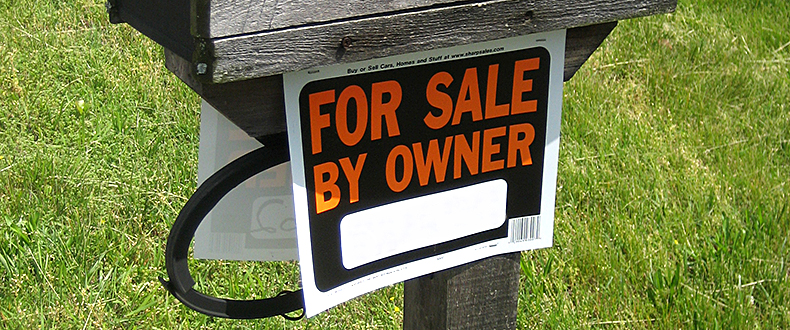

How do we 'own' data?
We live in an age of data abundance. We produce data every day – as people, businesses, charities and governments – that might be used to generate valuable insights and services. Ellen Broad explores data ownership in this age of abundance
Image: Flickr Nathanael Coyne (CC BY-NC-ND 2.0)
‘Owning’ data – who owns data, what’s capable of being owned, and what rights and responsibilities ownership attracts – is gaining a lot of attention. "My medical treatment data is mine." “We own this data. If you want to use it, you have to pay us.” “We need true data ownership.” “Your data is yours.” New laws and policies are emerging in response.
The European Commission strengthened the rights of people over their personal data with the General Data Protection Regulation (GDPR). Now, questions about ownership of data are emerging as part of the EU Free Flow of Data initiative. Ownership of data is becoming the starting point for reports and principles in health, consumer banking and other consumer services, to help navigate questions like:
How do we maximise the value of data?
Who benefits from data now? Who has access? Who should benefit, and in what circumstances?
How do we prevent misuse of data? How do we stop it being exploited in ways that we don’t think are fair?
How do we preserve people’s privacy?
Who should be held accountable for harm caused by decisions made using data, for example, where there is bias or fraud that hurts people?
These are all important questions. But we need to be careful in how we use the language of ownership to address them. Physical world metaphors don’t readily fit the data world. And even our understandings and expectations of ownership in the physical world aren’t as simple as they seem.
‘Owning’ data is not as straightforward as it sounds
There are fundamental ways in which data challenges our metaphors for ‘ownership’ in the physical world. For one thing, data is non-rivalrous: your use of data does not reduce its availability to others.
The value of data is enhanced by its connection to other data. Our individual health records have limited value – except to us as patients and those who support us. When they’re collected together with other health records, and the other kinds of data they can be linked with, the collective value of that data increases. This makes debates about things like whether we should be paid for our personal data, and how much, difficult to assess.
Image: Flickr Sascha Pohflepp (CC BY 2.0)
Multiple people or organisations can contribute to creating data. A doctor records your medical symptoms and adds notes on treatment. Both you, as a patient, and the doctor contribute to the creation of data.
Data can also be about multiple people. For example, it can be about your own IVF treatments, but by its nature also about your partner and your family.
‘Ownership’ in the physical world isn’t as straightforward as it sounds
We own things in lots of different ways.
We own our house. At the same time, the bank owns our house, because they paid the majority of the purchase price and we are repaying them in the form of mortgage repayments.
 Image: Flickr Images Money (CC BY 2.0)
Even though we own our house, easements and caveats shape who can access it and how we use it. The kinds of rules shaping ‘ownership’ can be country- or region-specific. There are rules that shape the kinds of activities we can engage in from our house – the businesses we can run, the TV programmes we can watch, the things we can grow and pets we can have. We have responsibilities towards our neighbours – to keep the noise down, to keep our property unpolluted, to prevent danger of strangers who might enter our property.
While we might own something, that doesn’t mean we can do what we like with it. You can’t burn down your own home, for example, or inflict acts of cruelty on your pets.
These rules reflect rights and responsibilities that have built up in our societies and legal systems over many years. Some things are privately owned, while others are collectively owned. In some cultures, collective ownership is the norm. Things like land, possessions, stories, dances and art are owned by the community.
As societies, we have decided that some things can’t be owned by anyone and should be treated as public goods. We, as a society, have a collective responsibility to maintain them – the air we breathe and the global climate, for example. There are other public goods that might be privately or publicly owned (depending on what country you’re in), like parks and beaches, sidewalks and roads, riversides, water and energy – all with different expectations of public control, access and use.
How we are creating rights and responsibilities for data
Rights to control how data is used, who has access to it, and mechanisms for accountability, co-exist for data in a range of ways.
Organisations who have invested significant time, money and effort in producing a database – regardless of whether it’s ‘original’ or ‘new’ – have an ownership right and some ability to control who accesses and uses that data (but not absolute control) in the European Union under the Database Directive.
Organisations who are collecting or processing personal data have obligations and responsibilities imposed upon them as ‘data controllers’ and ‘data processors’ under data protection laws, to guard against misuse and harm. People providing personal data have rights to request their own data, seek erasure or amendment to it, and move it between services, under the General Data Protection Regulation (GDPR).
Organisations and people providing data often have an obligation to ensure the data they provide is truthful and accurate. Sometimes these are legally enforced. Companies are obliged to provide accurate reporting data under companies law. MPs must publish comprehensive information about their spending. On the other hand, sometimes these are social expectations. We are expected to be truthful and accurate in providing medical data to our doctors and nurses, so that they can treat us, for example.
Emerging issues and considerations for data ownership
Ownership of data is being explored in numerous contexts. The Kings Fund is exploring people’s control of their own health data, on the basis that they own it. Initiatives like midata and the Open Banking Standard, recently supported by the Competition & Markets Authority (CMA), aim to provide consumers with easier, more efficient ways of accessing and moving their data.The UK government department formerly known as ‘BIS’ (now the Department for Business, Energy and Industrial Strategy, or BEIS) is exploring whether reputations data – ratings and reviews of an Uber driver or seller on eBay – should be moveable between services.
As policymakers, businesses, academics and innovators including the ODI’s President Tim Berners-Lee explore the potential of data and work to make it more malleable, movable and usable, determining the protections and rights we need to have in place becomes important.
A recent ODI Friday lunchtime lecture, with FT Alphaville’s Izabella Kaminska, Australian economist Nicholas Gruen, and Assistant Director of Strategy at BIES Tom Gelderd, explored issues around data ownership and portability, using portability of reputations data as their starting point.
A growing number of internet platforms allow people to submit reputation and feedback data. Some platforms are focused explicitly on providing feedback about services and products that they don’t own, and have no financial stake in. Patient Opinion and TripAdvisor are two platforms who attract visitors solely for the feedback and ratings provided by users of third-party services (healthcare and accommodation, restaurants and attractions).
Image: Flickr Turismo y Visitas Virtuales (CC BY 2.0)
On the other hand, some platforms use reputations data to drive trust in their own services. eBay, Uber and AirBnB let users rate people they buy things from, their drivers and accommodation providers to drive uptake of the services they offer and encourage improvements among people who use the platform.
The discussion at the lunchtime lecture – which covered topics as varied as data value and who benefits, data authenticity, overreliance on data and bias in data – demonstrated just how nuanced our considerations of data ‘ownership’ need to be.
The panel raised concerns about the manipulation of data and bias in data that we still view as truth. Reputations and reviews data can be biased (they might only reflect the views of a segment of the population, or reflect inherent bias), and yet they have the potential to alter our view of the world.
Researchers have found evidence of discrimination against racial minorities in ratings on Airbnb, and internet movie ratings can be sexist. Should publishers and aggregators of data have responsibilities for acting on these biases and working them into their analysis, or at least bringing them to our attention? Who is responsible for minimising harm?
The lunchtime lecture panel also discussed who benefits from data. The public goods of the 21st century – search engines, social networks and data – are built predominantly by private companies. There’s data that would have significant economic and social value if it were more accessible and usable, including as open data – the footfall data from our mobile phones, for example, or our social media behaviour. Increasingly, ideas of ‘ownership’ of data under IP law will clash with societal expectations of ‘ownership’, as key contributors to high-value data infrastructure held by the private sector. We’re still working out what the future holds.
We don’t have the answers
It would be great to be able to end this article with alternative framing language for data, or clear guidance as to what ‘ownership’ extends to and doesn’t in the data world. But we aren’t.
It’s clear that ‘ownership’ of data resonates with us as people, as businesses, as governments and as a society. And we care about data ownership because we want to provide people and organisations with mechanisms to control and influence how various kinds of data are accessed and used, who benefits and who is accountable for harm.
We’re still learning the rules and rights to help us get best value from data. Books and articles are being written outlining new ownership paradigms for data. Some legal concepts of data ownership already exist through data protection laws and IP laws. We want to avoid regulatory framings that might make sense for the physical world but don’t work for the web of data. We need to be able to adapt data regulation and policies as technologies evolve, and as our expectations of data maintainers and publishers – and ourselves as data consumers and producers – change too.
We’re continuing to explore this area. Let us know if you are too by emailing [email protected]. We would love to hear from you.